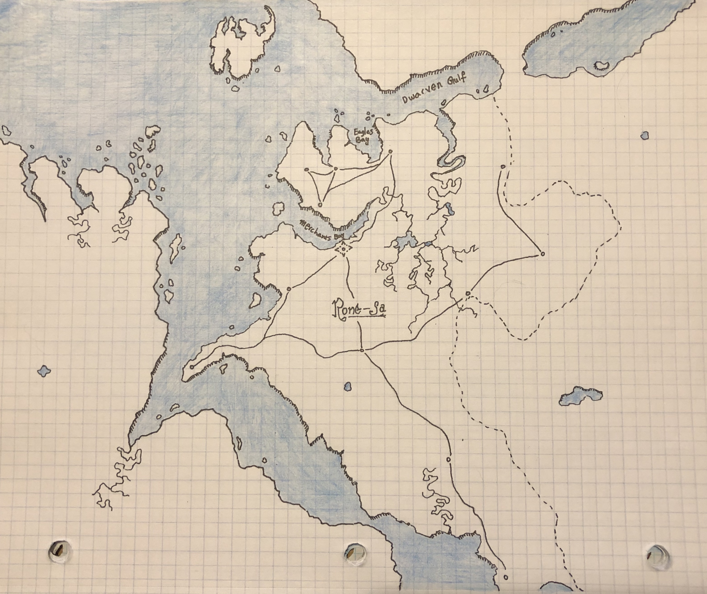
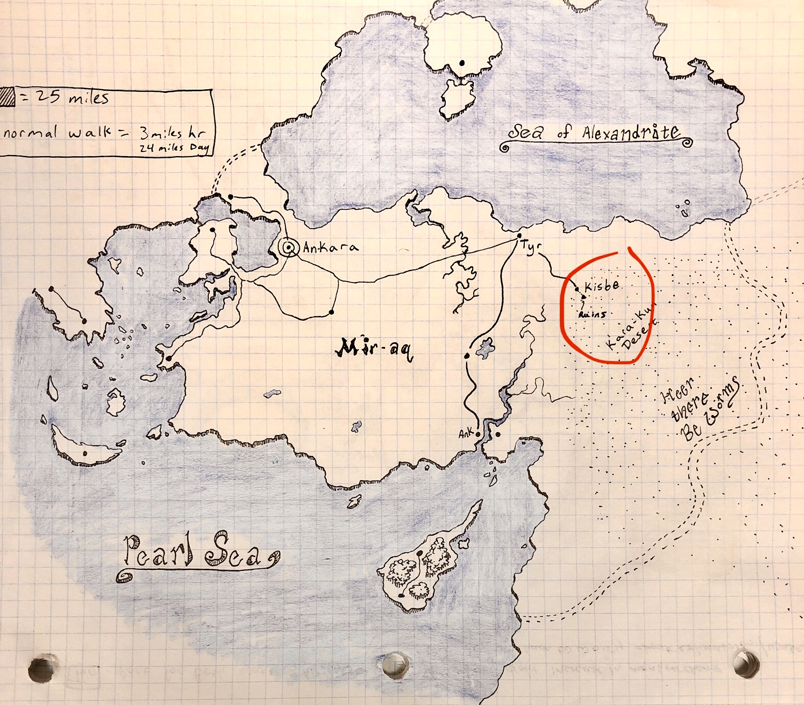

The world Ra-Aten - An ancient world where society's have risen and fallen for many a millennia. You are currently living in the year 19,999, the new Epoch is upon us, and every kingdom, in every country, on every continent, across the globe is ravenous with prophecy and conspiracy. Many have forseen the end of the world at the dawn of the new year. Many of these soothsayers are simply phonies, frauds and snake oil sellers but some scattered across the globe have made predictions with uncanny accuracy with recent events coming to fruition, comets blazing through the sky with the bluest of blue tails, Volcano eruptions, resurrections, children born with unique abilities and markings, the appearance of miracles from one deity or another, you might even know of some of these events maybe your kingdom has sent you on a journey to discover the truth behind one of these.
Mir-aq, our first main kingdom is knowns as the bridge to the west. Mir-aq is currently ruled by the Empress Nefer-ati who lives in the opulent capital city, Ankara located on the Western coast of the kingdom over looking the Pearl Sea. The queen treats her people well, slavery has been outlawed since the founding of the kingdom over a thousand years ago, but rumors are flying about the realm, whispering that the queen has surrounded her-self with witches, wizards and sycophants lusting for power, some even say her majesty has sold her soul to gain her own magical necrotic powers but no one can say for certain. The Empress is not married she has refused all, claiming that she has not found anyone worthy of her, and how can you blame her, her beauty is known across the globe of Ra-Aten.
Our starting city of Kisbe is not as grand as the city of Ankara, but they do try, the leader of Kisbe is a man by the name of Anas he is both a Religious leader and Political leader with the title of Imam, being granted this by the Empress herself, Anas is a middle aged man who's main goal is to enrich Kisbe and turn it into a bustling and thriving city, which he is on track to do, Anas has turned Kisbe into a hot bed for trade, especially with one of the more northern cities of Tyr. In Kisbe they specialize in Textiles, known to create some of the most vibrant dyes in all of Mir-aq, they are known for their work with architecture, mostly Artistic Mosaics and tile work, and they have more recently become popular for a drug known only as spice, only the wealthiest of individuals use and consume spice, many say it allows you to see glimpses of your future, many have began traveling to Kisbe to get a taste of this spice. Even though Anas has brought a new level of prosperity to this once dusty desert town he is not with out his enemy's there are many that believe Anas has lost his religious ways sacrificing his morals for greed.
Religion is central to Mir-aq, they follow the teachings of Un-Ma who is believed to be the Son of the Sun, Husband to the goddess Hek-ta,and the first of the gods to descend from the heavens. After witnessing the enslavement of his chosen people, the desert tribesmen, by the Kar-akis Empire, which still rules to the south across the pearl sea to this day. Legend tells that he road out of the clouds on the back of a Silver Wish Dragon known as Ankara, uniting the desert people and began a decade long Jihad against all who had enslaved the desert tribes and once all of his chosen people were freed they were united as one, and then he declared that together they would unite the world, and since that day the, Mir-aq, kingdom of the Sun began to grow, and eventually his initial holy site where Un-ma first touch down on this earth became the capital city Ankara, named after his treasured dragon. Legend tells that his dragon Ankara is still out there somewhere waiting for the return of her master
 